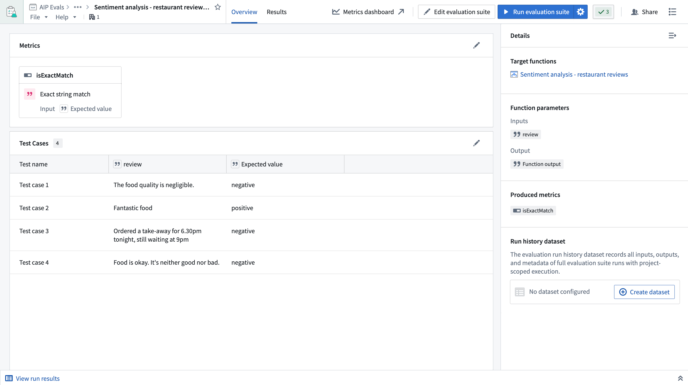

AIP Evals is a testing environment to evaluate the performance of your AIP Logic functions, AIP Chatbot functions, or code-authored functions. It is specifically designed to help you deal with the non-deterministic nature of LLMs. AIP Evals allows you to create test cases, define evaluation functions to measure performance, and compare the results against previous versions of your function. It enables you to build the necessary confidence to put LLM-backed functions into production or make changes to an existing implementation.
You can use AIP Evals to:
AIP Evals is also available as an integrated tool within AI FDE, allowing you to create and run evaluation suites through conversational commands.

Evaluation suite: The collection of test cases, target functions, and evaluation functions used to benchmark function performance.
Target function: The function being evaluated. A suite can be configured to test multiple target functions simultaneously.
Evaluation function: The method used when comparing or evaluating the actual output of a target function against the expected output.
Test cases: Defined sets of inputs and expected outputs that are passed into evaluation functions during evaluation suite runs.
Metrics: The results of evaluation functions. Metrics are produced per test case and can be compared in aggregate or individually between runs.
To get started, create an evaluation suite for logic functions, or create an evaluation suite for general functions, and learn more about evaluation run configurations.